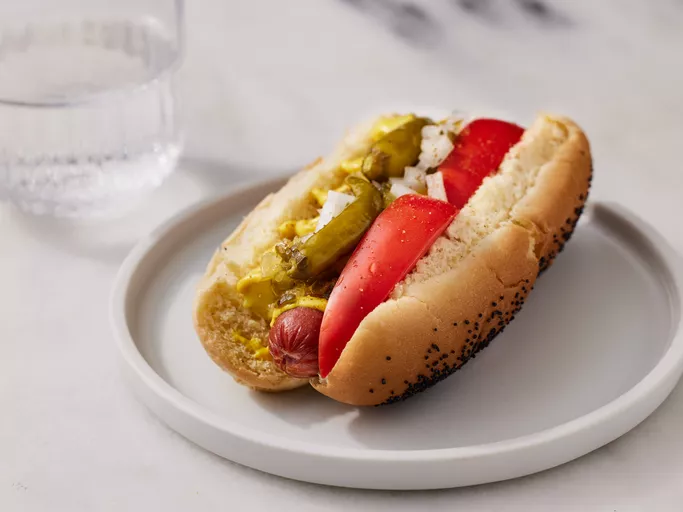

Chicago-Style Hot Dog

Description
Chicago Style Hot Dog is a savory, all-beef frankfurter nestled in a poppy seed bun and loaded with a colorful array of toppings: yellow mustard, bright green relish, chopped onions, juicy tomato wedges, a dill pickle spear, sport peppers, and a dash of celery salt. It’s a mouthwatering, classic street food experience that brings together a unique blend of flavors and textures, capturing the essence of Chicago in every bite.
Ingredients
- 1 all-beef hot dog
- 1 poppy seed hot dog bun
- 1 tablespoon yellow mustard
- 1 tablespoon sweet green pickle relish
- 1 tablespoon chopped onion
- 2 tomato wedges
- 1 dill pickle spear
- 2 sport peppers
- 1 dash celery salt
Step-By-Step
- Bring a pot of water to a boil over high heat. Reduce heat to low, place hot dog in water, and cook until warmed through, about 5 minutes. Remove hot dog from water and set aside.
- Place a steamer basket into the pot and steam poppy seed bun until warm, about 2 minutes.
- Place hot dog in steamed bun. Pile on toppings in this order: mustard, relish, onion, tomato, pickle, peppers, and celery salt. The tomato wedges should be nestled between hot dog and top of bun on one side. Place pickle between hot dog and bottom of bun on the other side. Don't even think about ketchup!